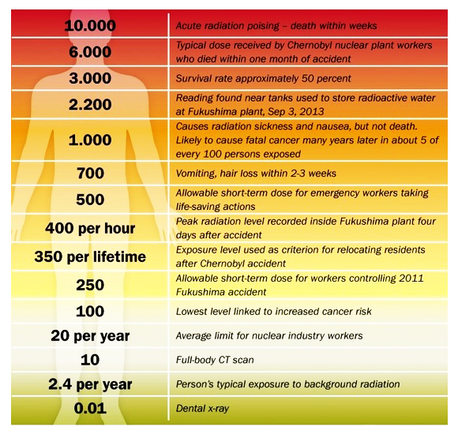

Types of radioactive emission:
(α) Alpha emission: Alpha emission occurs when a helium nuclei is stripped of it's electrons. It is dangerous in short proximity and especially if ingested or inhaled.
(β) Beta emission: Beta emission occurs when high-energy electrons are discharged from the nucleus of an atom when a neutron has split into a proton and an electron.
(γ) Gamma emission: Gamma emission is a high frequency form of light on the far right of the electromagnetic spectrum. It is very difficult to thwart the passing of gamma rays; only very dense elements like lead succeed in suppressing the amount of gamma rays that pass.
(n) Neutron emission: Neutron radiation is the most dangerous form of radioactive emission; as the neutrons absorb into the flesh at a much higher rate than other forms of emission. Additional to that danger there is also neutron activation to consider; which is when unstable neutrons bounce into atoms to then make those subject atoms become neutron activated and therefore also radioactive. Neutron-emitters have the ability to transmute chemical elements into other elements, albeit unstable, radioactive versions of them; called isotopes.
Radiation & Health:
Dose in (msv) millisieverts
